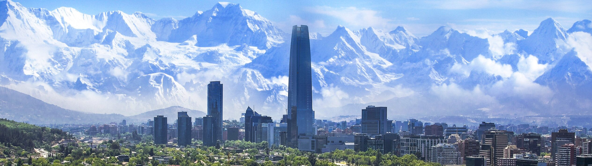

Сайт о городе Сантьяго (Чили)
Сантьяго — столица Чили, полное название города Сантьяго-де-Чили. Этот город сверкает стеклянными фасадами современного Сити, на востоке от Сантьяго – бескрайняя пампа Аргентины, на западе – Тихий океан, с севера на юг тянутся бесконечные цепи величественных Анд, а перекрывает их высочайшая гора континента Аконкагуа (6959 м). С юга и востока центр города окружен зеленью жилых кварталов, и дома поднимаются по склонам гор. Зимой город нередко окутывает облако смога. В Сантьяго проживает примерно четверть всего населения страны. Два холма нарушают прямоугольную городскую застройку: это Серро-Сан-Кристобаль и Серро-Санта-Лусия. Между ними видна река Мапочо, устремляющаяся к тихоокеанскому берегу. К югу от набережной, в Старом городе, люди и автомобили движутся между солидными историческими зданиями, красивыми художественными галереями, рынками и ресторанчиками. Вечер в Сантьяго можно провести и в ресторане, и в клубе, и в театре. Ценители вин обнаружат в окрестностях города винодельческие хозяйства, издавна известные своими традициями. На юго-востоке от Сантьяго путь через живописную долину реки Майпо ведет в Кордильеру. Экскурсия в северном направлении обещает знакомство с горнолыжным регионом Портильо, где туннель под горной грядой на высоте 3900 м выводит на аргентинскую сторону, откуда открывается вид на вершину Аконкагуа.